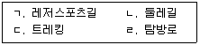
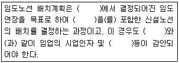
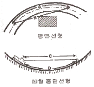

산림기사 (2012-08-26 기출문제)
1과목: 조림학
1. 다음 중 암수가 딴 그루인 수종은?
- Cryptomeria japonica
- Alnus japonica
- Pinus densiflora
- llex cornuta
(정답률: 62%)

2. 한 식물의 성분이 환경공간에 들어가서 다른 생물의 생육에 영향을 끼치는 현상은?
- 이래(migration)
- 경쟁(competition)
- 천이(succession)
- 타감작용(allelopathy)
(정답률: 73%)
3. 다음의 치환성염기 중 토양콜로이드에 치환 ·흡착하는 힘이 가장 큰 것은?
- Ca++
- Mg++
- KP+
- Na+
(정답률: 65%)
4. 토양의 무기양료에 대한 요구도가 높은 수종의 순서로 옳은 것은?
- 낙우송 ＞ 잣나무 ＞ 소나무
- 낙우송 ＞ 소나무 ＞ 잣나무
- 잣나무 ＞ 낙우송 ＞ 소나무
- 잣나무 ＞ 소나무 ＞ 낙우송
(정답률: 72%)
5. 순림에 관한 특징 설명으로 옳은 것은?
- 입지(立地)를 완전하게 이용할 수 있다.
- 경제적으로 가칭있는 나무를 대량생산할 수 있다.
- 숲의 구성이 단조로워서 병충해, 풍해의 저항력이 강하다
- 침엽수로만 형성된 순림에서는 임지의 약화가 초래되는 일이 없다.
(정답률: 87%)
6. 산벌작업법에 대한 설명으로 틀린 것은?
- 후계림은 동령림이 된다.
- 예비벌의 벌채 대상목은 주로 중용목과 피압목이다.
- 하종벌은 2~3회 나누어 실시한다.
- 윤벌기간을 단축시킬 수 있다.
(정답률: 58%)
7. 우리나라 천연소나무림의 생태적 지역형으로 줄기가 곧고 수관이 가늘며 지하고가 높은 소나무형은?
- 중남부평지형
- 금강형
- 위봉형
- 안강형
(정답률: 91%)
8. 임분에서 성숙한 임목만을 국소적으로 추출, 벌채 하고 그 곳의 갱신이 이루어지게 하는 갱신법으로, 다양한 영급과 경급의 수목이 임분에서 혼생하도록 하는 작업방법은?
- 군상개벌
- 보잔모수법
- 산벌
- 택벌
(정답률: 80%)
9. 삽목 발근에 관여하는 인자의 설명 중 맞는 것은?
- 삽수 안에 탄수화물의 양이 적고 질소의 양이 많을 때 발근이 잘된다.
- 연령이 어린 가지가 발근이 잘되는 경향을 보여준다.
- 모든 수목은 발근이 거의 잘되므로 발근 촉진제는 사실 필요가 없다.
- 비가 온 후에 삽목상에 물이 고인 상태에서 즉시 삽목을 하면 토양수분이 충분하므로 좋다.
(정답률: 79%)
10. 대체적으로 우리나라 온대 남부지역의 적합한 식재시기는?
- 2월 하순부터
- 3월 하순부터
- 4월 중순부터
- 5월 상순부터
(정답률: 52%)
11. 생가지치기를 할 경우 절단부위가 썩을 위험성이 큰 수종으로 짝지어진 것은?
- 소나무, 버드나무
- 편백, 자작나무
- 낙엽송, 벚나무
- 단풍나무, 물푸레나무
(정답률: 77%)
12. 종자 발아를 위해 후숙이 필요한 수종은?
- 버드나무
- 느릅나무
- 졸참나무
- 주목
(정답률: 64%)
13. 솎아베기의 목적으로 바르지 않은 것은?
- 생육공간의 조절
- 임분 수직구조의 단일화
- 임분형질 개선
- 임분구성의 조절
(정답률: 85%)
14. 복층림 조성의 장점이 아닌 것은?
- 임목의 수확 기간이 길어져서 대경목 생산이 가능하다.
- 생장이 균일하여 연륜폭이 균등하고 치밀한 목재를 생산할 수 있다.
- 개벌사업으로 벌채시 많은 설비비와 반출경비가 절약된다.
- 풍치 유지상 유리하다.
(정답률: 70%)
15. 다음 중에서 난대수족으로만 짝지어진 것으로 맞는 것은?
- 해송, 전나무, 상수리나무, 후박나무
- 밤나무, 느티나무, 잣나무, 아왜나무
- 녹나무, 황칠나무, 후박나무, 감탕나무
- 녹나무, 대나무, 감탕나무, 자작나무
(정답률: 73%)
16. 삽목상의 환경조건에 대한 설명으로 바르지 않은 것은?
- 삽목한 다음 해가림을 하여 건조를 막는다.
- 무균상태이고 보수력이 높으며 토익성이 좋은 삽목상이 필요하다.
- 대부분의 수종에서 삽목상의 적합한 온도는 10~15℃이다.
- 잎의 증산을 억제하기 위하여 분무번식을 할 수 있다.
(정답률: 71%)
17. 수목생장에서 측아(側芽)의 발달을 억제하는 정아우세 현상에 관여하는 호르몬은?
- 옥신(auxin)
- 지베렐린(GA)
- 사이토키닌(cytokinin)
- 아브시스산(ABA)
(정답률: 81%)
18. 종자를 파종하기 한 달쯤 전에 노천매장을 하여 발아를 촉진시키는 수종은?
- 소나무
- 들메나무
- 팽나무
- 백합나무
(정답률: 79%)
19. 다음 수종 중 낙엽침엽수인 것은?
- 해송
- 낙우송
- 버즘나무
- 삼나무
(정답률: 87%)
20. 종자가 발아를 시작하는 첫 과정은?
- 수분의 흡수
- 활발한 호흡작용
- 저장물질의 분해
- 유근(幼根)의 생장
(정답률: 71%)
2과목: 산림보호학
21. 수목의 그을음병(sooty mold)에 관하여 잘 못 설명한 것은?
- 그을음병균은 수목의 잎에 기생하여 양분을 탈취한다.
- 진딧물이나 깍지벌레가 번성하면 그을음병이 발생한다.
- 그을음병은 대부분 잎의 앞면에 발생한다.
- 물을 자주 뿌려주면 그을음병을 상당히 줄일 수 있다.
(정답률: 44%)
22. 다음 해충 중 날개를 편 길이가 가장 큰 것은?
- 미국흰불나방
- 솔나방
- 매미나방
- 텐트나방
(정답률: 51%)
23. 다음 중에서 표징에 속하지 않는 것은?
- 포자
- 썩음
- 균사체
- 버섯
(정답률: 66%)
24. 다음 이종기생성 녹병균의 수목병 중 기주식물 과 중간기주식물과의 관계가 잘못 짝지어진 것은?
- 소나무 혹병 : 소나무 -졸참나무
- 잣나무 털녹병 : 잣나무 - 송이풀
- 소나무 잎녹병 : 소나무 - 황벽나무
- 소나무 줄기녹병 : 소나무 - 참취
(정답률: 73%)
25. 다음 유해가스 중 배출량의 증가에 따른 온실효과의 주요인으로 작용하여 임목에 가장 큰 피해를 주는 것은?
- 아황산가스
- 염화수소
- 불화수소
- 과린산가스
(정답률: 86%)
26. 다음 중 천적관계로 서로 맞지 않는 것은?
- 버들재주나방- 산누에살이납작맵시벌
- 미국흰불나방-나방살이납작맵시벌
- 천막벌레나방-독나방살이고치벌
- 솔잎혹파리-아세리아깍지벌레
(정답률: 84%)
27. Rhizoctonioa solani에 의해 발생하는 모잘록병에 관한 설명 중 옳지 않은 것은?
- 습한 곳과 건조한 곳 모두에서 발생한다.
- 균사가 뿌리에 직접 침입한다.
- 지제부 줄기가 감염된 후 아래의 뿌리로 병이 진전한다.
- 토양 중에서는 유성세대가 쉽게 발생한다.
(정답률: 42%)
28. 다음 살충제 중 기피제에 속하는 것은?
- 나프탈렌
- 알킬화제
- 벤젠
- 포스팜액제
(정답률: 81%)
29. 열사(熱死)의 피해를 가장 적게 받는 수종은?
- 곰솔, 측백나무
- 소나무, 화백
- 편백, 전나무
- 가문비나무, 솔송나무
(정답률: 42%)
30. 임분구성을 통해 풍부한 야생동물군집을 형성하기 위한 방법에 해당하지 않는 것은?
- 순림 조성
- 다층림 조성
- 천연림 조성
- 장령, 노령림 조성
(정답률: 86%)
31. 농약의 효력을 충분히 발휘하도록 하기 위하여 첨가하는 물질을 일컫는 용어는?
- 훈증제
- 보조제
- 유인제
- 기피제
(정답률: 93%)
32. 겨울포자퇴로부터 소생자가 날아가 발병되는 질병은?
- 밤나무 잎마름병
- 배나무 붉은별무늬병
- 사과나무 탄저병
- 배롱나무 흰가루병
(정답률: 68%)
33. 국내 산림병해충 중 2000년대(2000~2009)에 걸쳐 피해 면적이 가장 많은 해충은?
- 솔껍질깍지벌레
- 미국흰불나방
- 소나무재선충병
- 솔잎혹파리
(정답률: 52%)
34. 소나무 잎떨림병균이 월동하는 곳은?
- 땅위에 떨어진 병든 잎
- 중간기주의 잎
- 소나무 뿌리와 줄기
- 주변의 잡초
(정답률: 76%)
35. 식엽성 해충이 아닌 것은?
- 대벌레
- 소나무순나방
- 미국흰불나방
- 참나무재주나방
(정답률: 57%)
36. 병균이 종자의 표면에 부착해서 전반(傳搬)되는 것은?
- 오리나무 갈색무늬병균
- 잣나무 털녹병균
- 밤나무 줄기마름병균
- 근두암종병균(뿌리혹병균)
(정답률: 67%)
37. 일반적인 조건에서 밤나무혹벌의 년 중 발생 세대수는?
- 년 1회 발생
- 년 2회 발생
- 년 3회 발생
- 년 4회 발생
(정답률: 79%)
38. 소나무좀은 유충과 성충이 모두 소나무에 피해를 가하는데, 신성충이 주로 가해하는 곳은?
- 소나무 잎
- 소나무 뿌리
- 수간 밑부분
- 소나무 새가지
(정답률: 73%)
39. 환경부가 지정한 멸종위기 동물에 속하지 않는 것은?
- 물개
- 사향노루
- 반달가슴곰
- 표범
(정답률: 50%)
40. 포플러 잎녹병의 잠복기간은?
- 4일~6일
- 4주~6주
- 4개월~6개월
- 4년~6년
(정답률: 62%)
3과목: 임업경영학
41. 전체 산림면적이 500ha이고, 표준지 면적이 0.04ha이다. 변이계수 60%, 허용오차 15%를 적용할 경우 임분재적을 추정하기 위한 표본점의 수를 계산하면?
- 13개
- 22개
- 64개
- 88개
(정답률: 49%)
42. 임분연령의 측정에서 이령림의 평균령(average age)을 가장 잘 설명한 것은?
- 표본목을 선정한 다음 그 연령을 측정하여 평균한 임령
- 이령임분이 가지는 재적(材積)과 같은 재적을 가지는 동령림의 임령
- 각 연령별 임목본수를 조사한 다음 이의 산술평균에 의해 산출된 임령
- 각 연령별 단면적을 조사한 다음 이의 산술평균에 의해 산출된 임령
(정답률: 54%)
43. 자연휴양림 안에 시설을 설치할 때 그 기준에 틀린 내용은?
- 임업체험시설은 경사가 완만한 지역에 설치하여 야 하며 체험활동에 필요한 기본 장비 등을 갖춘다.
- 야영장은 산사태 등의 위험이 없고, 일조량이 많은 지역에 설치하되, 바깥의 조망이 가능하도록 한다.
- 식수는 먹는 물 수질기준에 적합하게 한다.
- 자연관찰원은 다양한 수종을 관찰할 수 있도록한다.
(정답률: 61%)
44. 산림환경자원으로서 야생동물의 서식밀도는 어떻게 표시하는가?
- 10ha 당의 마리수(봄철)
- 10ha 당의 마리수(여름철)
- 100ha 당의 마리수(봄철)
- 100ha 당의 마리수(여름철)
(정답률: 79%)
45. 임가소득에 대한 설명으로 틀린 것은?
- 임업외 소득도 임가소득에 포함된다.
- 임업소득도 임가소득에 포함된다.
- 임업소득과 기타소득의 합에서 농업소득을 빼면 임가소득이 된다.
- 임가소득지표는 생산자원의 소유형태가 서로 다른 임가사이의 임업경영성과를 직접 비교할 수 없다.
(정답률: 60%)
46. 자연휴양림에 산책로·탐방로·등산로 등의 체험· 교육시설을 설치할 때 불가피한 경우를 제외한 숲길의 폭 기준은?
- 1미터 이하
- 1미터 50센티미터 이하
- 2미터 이하
- 2미터 50센티미터 이하
(정답률: 67%)
47. 아래 [보기]의 숲길 중 '트레킹길' 종류에 속하는 것은?

- ㄱ, ㄴ
- ㄴ, ㄷ
- ㄷ, ㄹ
- ㄱ, ㄹ
(정답률: 79%)
48. 우리나라 산림조합은 어떤 기업의 형태인가?
- 단독사기업
- 집단사기업
- 공기업
- 공사협동기업
(정답률: 62%)
49. 이령림의 경영에서 요구되는 결정인자에 포함되지 않는 것은?
- 윤벌기
- 임분구조
- 잔존임목축적수준
- 지속가능성 과정
(정답률: 58%)
50. 입목의 직경을 측정하는데 사용하는 기구가 아닌 것은?
- 직경테이프(diameter tape)
- 아브네이레블(Abney hand level)
- 빌티모아스티크(biltimore Stick)
- 윤척(caliper)
(정답률: 69%)
51. 투자에 의해 장래에 예상되는 현금유입과 유출의 현재가를 동일하게 하는 할인율로서 투자효율을 결정하는 방법은?
- 수익·비용비법
- 회수기간법
- 순현재가치법
- 내부수익률법
(정답률: 50%)
52. 지황조사 항목 중 토양의 점토함유량이 20%인 경우 토양형은?
- 사토(사)
- 식양토(사양)
- 양토(양)
- 식양토(식양)
(정답률: 59%)
53. 휴양림 방문자의 이용밀도를 조절하고 안전과 질서를 유지하는 관리기법 중 직접기법에 해당하지 않는 것은?
- 활동제한
- 지역규제
- 차등요금 부과
- 사용규제
(정답률: 80%)
54. 다음 중 '산림문화 · 휴양에 관한 법률'에 의거하여 자연휴양림에 대한 설명으로 맞는 것은?(관련 규정 개정전 문제로 여기서는 기존 정답인 4번을 누르면 정답 처리됩니다. 자세한 내용은 해설을 참고하세요.)
- 국가 및 지방자치단체 외의 자가 자연휴양림을 조성하려는 경우 10헥타르 이상의 산림이어야 한다.
- 산림문화·휴양 기본계획은 5년마다 수립 · 검토 하여야 한다.
- "자연휴양림"이라 함은 국민의 정서함양 · 보건 휴양 및 산림교육과 동시에 경제림 조성을 위하여 조성한 산림을 말한다.
- 광역시장 도지사는 지역산림문화 휴양계획을 10년마다 수립 시행하여야 한다.
(정답률: 69%)
55. 어떤 산림기계의 취득원가가 5,000,000원, 잔존 가치가 500,000원이고, 그 내용연수가 50년이라 고 할 때, 이 기계의 연간 감가상각비를 정액법 으로 구하면?
- 90,000원
- 100,000원
- 500,000원
- 1,100,000원
(정답률: 80%)
56. 다음 보기 중 임업경영비를 바르게 표현한 것은?
- 임업소득-가족임금추정액
- 임업현금지출+감가상각액+미처분 임산물재고 감소액+임업생산 자재재고감소액+주임 목감소액
- 임업현금수입+임산물가계소비액+미처분임산물 증감액+임업생산 자재재고증감액+ 임목성장액
- 임업소득 - (자본이자+가족노임추정액)
(정답률: 76%)
57. 임지기망가가 최대치에 도달하는 시기는 구성인 자의 크기에 따라 다른데, 이에 관한 설명으로 옳은 것은?
- 이율이 낮을수록 빨리 나타난다.
- 간벌수확이 적을수록 빨리 나타난다.
- 채취비가 많을수록 빨리 나타난다.
- 주벌수확의 증가속도가 빠를수록 빨리나타난다.
(정답률: 62%)
58. 소나무 원목의 1m3 당 시장 가격이 300,000원, 1m3 당 생산비용이 100,000원, 조재율 70%, 투 하 자본의 회수기간이 5개월, 자본의 월이율이 4%, 기업 이익률이 30% 라고 할 때, 1m3당 임 목가는? (단, 시장가역산법을 적용하여 계산한다.)
- 55,000원
- 70,000원
- 95,000원
- 125,400원
(정답률: 52%)
59. 손익분기점분석에 관한 내용으로 틀린 것은?
- 손익분기점은 한계수익과 한계비용이 같아지는 매출액수준이다.
- 원가, 조업도, 이익의 관계를 분석하는 것이다.
- 제품 한 단위당 변동비는 생산량에 따라 증가한다는 가정 하에 분석한다.
- 제품의 생산능률은 변함이 없다는 가정 하에 분석한다.
(정답률: 77%)
60. 산림평가의 정의로 가장 적합한 것은?
- 산림피해의 손실액과 보상액 산정
- 산림을 구성하는 임지 · 임목 ·부산물 등의 경제적 가치를 평가
- 산림을 분할 또는 병합할 때의 가격산정
- 재산목록 또는 대차대조표를 작성할 때의 재산가치 결정
(정답률: 85%)
4과목: 임도공학
61. 쇄석의 틈사이에 석분을 물로 침투시켜 롤러로 다져진 도로는?
- 교통체머캐덤도
- 수체머캐덤도
- 역청머캐덤도
- 시멘트머캐덤도
(정답률: 85%)
62. 임도의 종단선형을 구성하는 요소는?
- 종단곡선
- 배향곡선
- 단곡선
- 완화곡선
(정답률: 69%)
63. 「산림자원의 조성 및 관리에 관한법률 시행규 칙」에서 정한 임도시설이 불가능한 지역이 아닌 곳은?
- 산지관리법에서 정한 산지전용 제한 지역
- 도로 또는 농로로 지정 · 고시된 노선과 중복되는 지역
- 임도 예정노선 20% 이상이 화강암질풍화토인 지역
- 임도 예정노선 10% 이상이 암반인 지역
(정답률: 56%)
64. 트래버스측량의 면적계산 시에 횡거란 무엇인가?
- 측선의 한쪽 끝에서 남북 자오선에 내린 수선의 길이
- 측선의 중점에서 남북 자오선에 내린 수선의 길이
- 측선의 한쪽 끝에서 동서선에 내린 수선의 길이
- 측선의 중점에서 동서선에 내린 수선의 길이
(정답률: 48%)
65. 다음 중 괄호 안에 들어갈 단어의 조합 순서로 적합한 것은?

- 임도밀도계획-기설임도-임도밀도계획-지형인자
- 기설임도-임도밀도계획-기설임도-지형인자
- 임도계획-기설임도-임도계획-지형인자
- 기설임도-임도계획-기설임도-지형인자
(정답률: 61%)
66. 다음 중 벌목 및 조재용 기계가 아닌 것은?
- 트리펠러
- 프로세서
- 하베스터
- 포워더
(정답률: 58%)
67. AB의 두 점간의 거리는 100m이며 경사(물매)는 10%이다 이 때, AB 두 점간의 표고차는?
- 5m
- 10m
- 15m
- 20m
(정답률: 78%)
68. 다음 중 우리나라 간선임도의 설계속도 기준은?
- 50~40 km/시간
- 40~20 km/시간
- 30~20 km/시간
- 20~10 km/시간
(정답률: 78%)
69. 임도 총연장이 2km이고 산림면적이 100ha이며 산림이 평지라고 가정한다면 임도간격은?
- 500m
- 400m
- 300m
- 250m
(정답률: 75%)
70. 임도 설계시 현장에서 측정한 야장을 토대로 횡 단면도를 작성하고자 한다. 임도시설규정에서는 KSF1001 토목제도 통칙에 따라 작성하고 있는 데, 이 때 횡단면도상에 표기하지 않아도 되는 것은?
- 지장목 제거
- 사면보호공, 측구터파기 단면적
- 지반고, 계획고, 절토고, 성토고
- 곡선제원, 교각점
(정답률: 63%)
71. 다음 설명 중에서 등고선의 주요한 성질이 아닌 것은?
- 지표면의 경사가 일정하면 등고선 간격은 같고 평행하다
- 등고선은 분기하거나 또는 다른 등고선과 교차하지 않는다.
- 등고선은 도중에 소실되지 않으며 폐합된다.
- 등고선은 최대 경사선에 직각이고 분수선과 직각으로 만난다.
(정답률: 62%)
72. 임도 시공장비의 기계경비 산출시 기계손료에 포함되지 않는 항목은?
- 상각비
- 정비비
- 유류비
- 관리비
(정답률: 74%)
73. 다음 중 장마기가 지난 후 옆도랑과 빗물받이의 토사를 제거하기 위한 가장 적합한 작업기계는?
- 진동 로울러
- 모터 그레이더
- 소형 불도저
- 소형 백호우
(정답률: 67%)
74. 임도의 곡선설정법에 이용되는 방법이 아닌 것은?
- 사출법
- 진출법
- 교각법
- 편각법
(정답률: 61%)
75. 우리나라 임도관련 규정상 내각이 몇 도(°) 이상인 곳에서는 곡선설치를 생략할 수 있는가?
- 45° 이상
- 90° 이상
- 125° 이상
- 155° 이상
(정답률: 78%)
76. 임도노선의 측량방법에서 노면의 시공면과 산지의 경사면이 만나는 점을 연결한 노선의 종축은?
- 영선
- 중심선
- 지반선
- 지형선
(정답률: 83%)
77. 다음은 임도의 평면선형과 형 중단선형을 각각 나타낸 그림이다. 아래 그림에서 시거를 바르게 표현한 것은?

- A, C
- A, D
- B, C
- B, D
(정답률: 54%)
78. 임도의 비탈 녹화방법의 종류와 시공법에 대한 설명이 잘못된 것은?
- 떼단쌓기(段積立芝工) - 떼단높이 27~30㎝를 바탈면 계단위에 연속적으로(5단 이하) 쌓아 퇴적토사의 비탈면을 피복시킨다.
- 평떼붙이기 - 비탈면 다듬기(1:1)를 한 후 평떼 (30×30㎝)의 온 떼를 붙이기한 후 떼의 미끄럼 방지를 위하여 떼꽂이막대(25㎝)를 꽂아두는 공법이다.
- 띠떼심기 - 비탈면 다듬기(1:0.7)를 한 후 수평 으로 깊이 6㎝의 골을 30㎝ 간격 으로 파고 난 후 떼를 골속에 삽입하고 다지기하는 방법이다.
- 새심기 - 직접 수목의 유묘 또는 성묘나 대묘 등을 식재하여 비탈면의 녹화를 도모하는 공법이다.
(정답률: 56%)
79. 다음 중 콘크리트에 대한 사항으로 올바르지 않은 것은?
- 거푸집 내면의 막음널에 이탈제로서 광유를 바르거나 비눗물을 바르기도 한다. 동결할 우려가 없을 때에는 물로 충분히 적신다.
- 운반한 콘크리트는 즉시 쳐야 한다. 특별한 경우라도 온난 건조할 시는 1시간, 적온 습윤할 시는 2시간이내에 치기를 끝내야 한다.
- 일반적으로 1.5m 이상의 높이에서 콘크리트를 떨어뜨려서는 안 된다.
- 기둥, 교각, 벽 등에는 콘크리트를 쳐 올라감에 따라 뜬 물이 생기므로 묽은 반죽으로 하는 것이 좋다.
(정답률: 75%)
80. 임도의 시공 후 개수나 보수에 의한 구조변경이 어려워 가장 중요하게 고려되어야 하는 것은?
- 측구
- 노폭
- 종단물매
- 곡선반지름
(정답률: 67%)
5과목: 사방공학
81. 지하로 침투하지 못한 빗물이 지표유출수를 형성하여 흐르면서 토사를 움직이게 하는 힘을 무엇이라 하는가?
- 수직응력
- 소류력
- 유송력
- 운반력
(정답률: 68%)
82. 다음 산복비탈면에서 비탈다듬기공사를 설계할 때 유의해야 할 점은?
- 산복비탈면의 수정기울기는 종단면도를 작성하여 결정한다.
- 수정기울기는 지질ㆍ면적ㆍ공법 등에 따라 차이를 두되 대체로 45° 전후로 한다.
- 퇴적층 두께가 3m 이상일 때에는 땅속흙막이 공작물을 설계한다.
- 기울기가 급한 장소에서는 산비탈돌쌓기로 조정한다.
(정답률: 38%)
83. 흙댐을 시공하려고 할 때 흙댐의 높이를 2~5m 정도로 계획하려고 한다. 이 때 반수면 및 대수면 기울기로 가장 적합한 것은?
- 반수면 1:2.0, 대수면 1:1~2.0
- 반수면 1:1.5, 대수면 1:1~1.5
- 반수면 1:1.0, 대수면 0.8~1.5
- 반수면 1:0.5, 대수면 0.5~1.2
(정답률: 30%)
84. 황폐계류의 유역을 구분할 때, 상류로부터 하류까지의 순서가 옳은 것은?
- 토사생산구역 → 토사퇴적구역 → 토사유과구역
- 토사퇴적구역 → 토사생산구역 → 토사유과구역
- 토사유과구역 → 토사생산구역 → 토사퇴적구역
- 토사생산구역 → 토사유과구역 → 토사퇴적구역
(정답률: 79%)
85. 산지사방공사의 정지공사에서 비탈다듬기공사를 실시하기 전에 시공해야하는 공사는 무엇인가?
- 속도랑공사 및 단끊기공사
- 속도랑공사 및 땅속흙막이공사
- 속도랑 공사 및 수로내기공사
- 땅속흙막이공사 및 단끊기공사
(정답률: 55%)
86. 사방댐에서 대수면이란?
- 댐의 천단부분
- 댐의 하류측 사면
- 댐의 상류측 사면
- 방수로 부분
(정답률: 78%)
87. 비탈면에 경관식재를 추진할 때 고려해야할 사항을 바르게 설명한 것은?
- 인공재료에 의한 시공보다 비탈면기울기를 급하게 한다.
- 관목으로 비탈면 식재를 추진할 경우 사면경사는 1:1보다 완만해야 한다.
- 비탈면에 전면 떼붙이기 후 잔디깎기기계를 사용해 관리하려면 사면경사는 1:2보다 완만해야 한다.
- 경관식재에서는 안전을 위해 비탈면에 교목식재나 대묘 이식을 하지 않는 것이 원칙이다.
(정답률: 60%)
88. 산비탈 수로 해당 유역의 유거계수(K)가 1.0이고 최대시우량이 100mm/h, 유역면적이 3.6ha이었다면, 수로가 통과시켜야 할 유량(m3/s)은?
- 1.0m3/s
- 5.0m3/s
- 10.0m3/s
- 15.0m3/s
(정답률: 58%)
89. 주성분이 석영(30%), 장석(65%), 운모 또는 각섬석 등을 갖는 산성 심성암으로서, 좋은 축석용 석재인 사방공사용 마름돌, 견치돌을 생산할 수 있으며, 우리나라에 널리 분포하는 암석은?
- 석회암
- 현무암
- 결정암
- 화강암
(정답률: 89%)
90. 산지 침식의 분류에서 물에 의한 침식에 속하지 않는 것은?
- 우수침식
- 하천침식
- 동상침식
- 지중침식
(정답률: 56%)
91. 일반적으로 비탈 돌쌓기 공종 중 메쌓기의 표준물매는 어떻게 구성되는가?
- 1:0.1
- 1:0.2
- 1:0.3
- 1:0.4
(정답률: 76%)
92. 대체적으로 견치돌(四角石)의 크기에서 뒷길이는 앞면 길이의 얼마로 하는가?
- 1.5배 이상
- 1/5이상
- 1/3 정도
- 1/10정도
(정답률: 54%)
93. 훼손지 복원공법에서 생태계 복원공법의 특징과 거리가 먼 것은?
- 2~3년간의 현지조사 및 자료수집(기상, 토양, 식물, 이용형태 등)
- 이용자 편의 및 규제와 함께 수립
- 국지적 환경 요인별로 5~10년간 현지 복원실험 실시
- 초기에는 작은 규모, 후기에는 큰 규모로 단계적 시행
(정답률: 41%)
94. 비탈파종공법에서 한 종류의 발생기대본수는 총 발생기대본수의 몇 %이하가 되지 않도록 파종량을 산정해야 하는가?
- 10%
- 20%
- 30%
- 40%
(정답률: 59%)
95. 폐탄광지역 사방공사의 주요사항이 아닌 것은?
- 차폐식재를 하여 좋은 경관을 만든다.
- 사면붕괴 방지를 위해 사면 안정각을 유지한다.
- 광미 및 폐석탄을 제거하고 복토를 하여 식재한다.
- 경제림을 단기적으로 조성한다.
(정답률: 76%)
96. 비탈붕괴 ㆍ 산사태 발생의 인위적인 요인은?
- 동결융해
- 지진
- 강우, 적설
- 수목의 벌채
(정답률: 81%)
97. 다음에서 산복사방공사의 시공방침이 아닌 것은?
- 표토 침식 방지
- 양안 침식 방지
- 부괴 확대 방지
- 산사태 위험 방지
(정답률: 47%)
98. 다음 비탈면녹화공법 주 형식이 다른 하나는?
- 선떼붙이기 공법
- 새심기 공법
- 평떼심기공법
- 점파공법
(정답률: 55%)
99. 비탈면안정공법으로 비교적 붕괴위험이 많은 비 탈에 거푸집을 설치하고 콘크리트치기를 하여 비탈안정을 위한틀(뼈대)을 만들어 그 안에 작은 돌이나 흙으로 채우고 녹화를 꾀하는 공법은?
- 비탈 격자틀 붙이기
- 비탈 힘줄박기
- 비탈 블록 붙이기
- 비탈 콘크리트 뿜어붙이기
(정답률: 72%)
100. 정사울세우기 공법의 시공요령으로 알맞지 않은 것은?
- 울타리의 방향은 주풍방향에 직각이 되게 한다.
- 울타리의 높이는 보통 1.0~1.2m 정도로 한다.
- 울타리의 간격은 보통 7~15m로 한다.
- 울타리가 풍압에 견딜 수 있도록 하단부를 약 10cm정도 모래 속에 묻어야 한다.
(정답률: 58%)